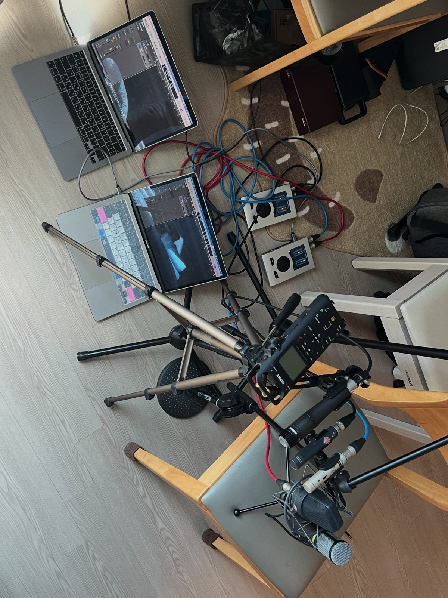

비슷한 위치에서 녹음한 7개 음원을 시간·음량 기준으로 맞췄습니다. 아래 곡선은 측정된 절대 FR이 아니라, 실제 녹음에서 드러난 상대적 음색 차이입니다.
녹음 현장 사진 보기 ↓8트랙 Solo 비교
7개 원본 비교 음원과 iPhone 보정본. Solo를 바꾸면 같은 시점에서 이어집니다.
재생 준비 중…
헤드폰을 권장합니다. iphone2km184는 iPhone 녹음의 추정 음색만 EQ로 보정한 파생 트랙입니다. KM184의 잡음·왜곡·지향성까지 재현한 것은 아닙니다. 페이지의 음량 보정은 지각 음량을 맞추기 위한 것이며, 장치·브라우저 볼륨은 별개입니다. em-usb는 녹음 중 시간차가 변해 같은 시점 전환이 근사치입니다.
상대 스펙트럼
KM184 기준 · 500–2,000 Hz 중앙값을 0 dB로 정렬
레전드의 마이크 이름에 마우스를 올리거나 키보드로 포커스하면 해당 곡선 아래가 채워집니다. 채움의 진하기는 그 녹음에서 해당 주파수의 신호가 조용한 구간보다 얼마나 뚜렷하고 자주 나타났는지 보여주는 상대적 정보량입니다. 전체 보기는 40 Hz–18 kHz, 집중 보기는 70 Hz–4 kHz입니다. 1/6 옥타브 평활화. 절대 FR의 통계적 신뢰구간이나 마이크 자체의 성능 점수는 아닙니다.
마이크별 인상
중역 대비 변화량 · 단위 dB
| 마이크 | 저역 80–250 Hz | 저중역 250–500 Hz | 존재감 2–5 kHz | 고역 8–16 kHz | 원본 LUFS | 싱크 이동 | 싱크 변화폭 |
|---|
↕ 표시는 기준 음원과 극성이 반대여서 청취 파일에서 반전한 경우입니다. iphone2km184의 원본 LUFS는 변환 전 iPhone 값입니다. 싱크 변화폭은 4개 구간의 xcorr 시간차 범위이며, 큰 값은 일정한 오프셋만으로 정렬하기 어렵다는 뜻입니다.
이 그래프가 말하는 것,
말하지 않는 것.
시간 정렬은 상호상관(xcorr)으로 큰 시간차를 찾고 파형으로 샘플 단위까지 보정했습니다. 공통으로 겹치는 구간만 사용했고, ITU-R BS.1770 방식의 게이팅을 적용한 통합 LUFS로 음량을 맞췄습니다.
스펙트럼은 같은 구간의 STFT 파워 중앙값을 비교했습니다. 그래프는 기준 녹음 대비 비율이므로 마이크 자체의 공인 FR 곡선이 아닙니다. 위치의 미세한 차이, 지향각, 방 반사, 프리앰프, 내장 DSP, 자체 잡음이 모두 포함됩니다. 특히 스마트폰·레코더의 처리와 고역 잡음은 큰 차이를 만들 수 있습니다.
iphone2km184는 두 녹음의 평활화된 상대 스펙트럼을 바탕으로 만든 4,097탭 대칭 FIR(FFT 컨볼루션) 보정본입니다. 주로 70Hz–4kHz를 보정하고 바깥쪽은 평탄하게 되돌리며, 부스트/컷을 +8/−6dB로 제한했습니다. 처리 후 통합 LUFS를 다시 맞추고 결과 WAV를 재분석해 곡선을 그렸습니다. 음색의 일부만 맞춘 것이며 위상·잡음·왜곡·DSP·지향성의 차이는 남습니다.
추가로 볼 만한 것은 자음 명료도를 좌우하는 2–5 kHz, 저역의 근접 효과, 초고역의 잡음/에어감, 무음 구간의 노이즈 플로어, 구간별 음색 일관성입니다. 절대 FR을 얻으려면 같은 위치의 교정 스피커·로그 스윕·기준 마이크가 필요합니다.
녹음 현장
마이크를 가까이 모아 배치한 당시 모습입니다. 각 캡슐의 거리와 지향각이 완전히 같지는 않으므로, 앞의 곡선에는 배치 차이도 반영됩니다.
